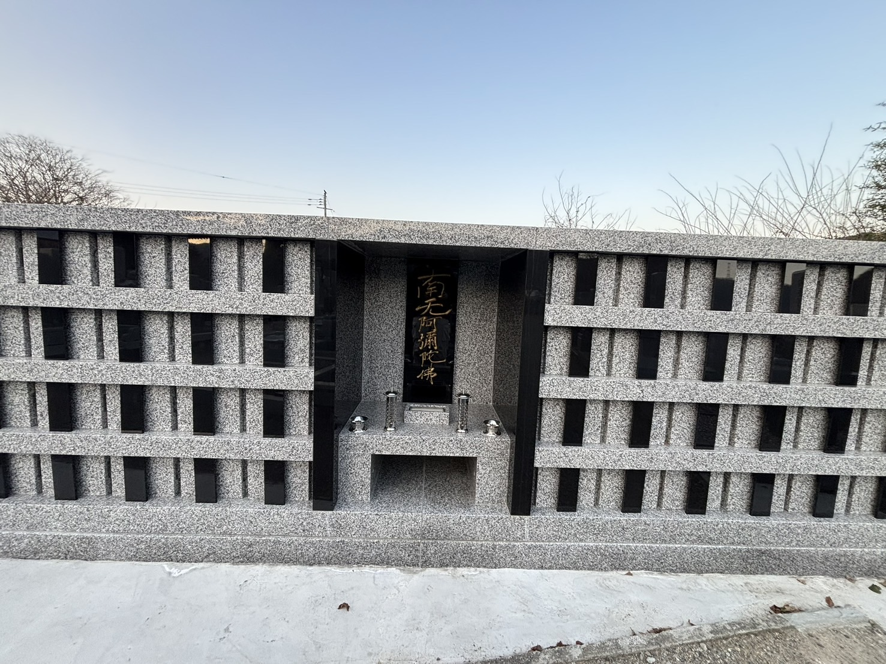

INFORMATION
お知らせ
3月9日
① 午後1時30分より ② 午後7時より
本堂にて常例法座がございます。
どうぞお参りください。
ご講師
大阪教区交野組 法音寺
朝山大俊氏
3月13日
① 午後1時より ② 午後7時より
3月14日
① 午後1時より
本堂にて永代経法要がございます。
どうぞお参りください。
ご講師
兵庫教区宍粟組 明源寺
杉山義伸氏
Attention


COMING-OF-AGE PHOTO
晴れの日を、
晴れの日を、
四季の彩りとともに。
四季折々の境内で、成人式の前撮り撮影を
承っております。振袖姿の晴れの日を、
美しい景色とともに残していただけます。


— NEW —
個別納骨墓のご案内
大切な人を、いつまでも身近に。
西光寺に、新たに個別納骨墓を設けました。
ご家族の想いに寄り添い、安心してお参りいただける
場所をご用意しております。
詳しくはお気軽にお問い合わせください。

Active Gallery
法座・法要・行事
ご法座や法要の様子をご紹介します。
子ども向け行事
子どもたちの笑顔あふれる時間。
学びと遊びのひととき。
学びと遊びのひととき。
活動風景
ご法座や法要の様子をご紹介します。
日常風景
普段の何気ないひと時。
四季が魅せる西光寺の魅力。
四季が魅せる西光寺の魅力。